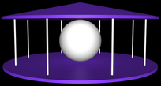

CS 424: Computer Graphics, Spring 2021
Lab 8: A Merry-Go-Round in three.js
In this lab you will build a complex animated model using three.js. You will need a copy of the folder lab8-files, which you can find in /classes/cs424 as usual (or download this zip archive and unpack it). You will work on the file merry-go-round.html. The files include two texture images that I used in my own merry-go-round. You can use them if you want, and you can add other image files to that folder if you want to use them instead.
As an example of building scenes in three.js, you have the windmill and earth/moon scene that I talked about in class on Wednesday.
In lab next week, you can work on the midterm project. There will be another three.js lab in two weeks. Your merry-go-round will be collected along with the work from that lab.
The Assignment
The assignment is to use three.js to make a merry-go-round with eight horses. The merry-go-round must have a top and a bottom and a pole for each horse. When animation is turned on, the merry-go-round must rotate, and the horses must go up and down. But the horses should not all move in synchrony. In my version, there are two groups of four horses. One group is going up while the other is going down. (Each group of four horses was made using a THREE.Object3D as parent for the four horses, so that I could move the group as a unit.) You should place some object at the center of the merry-go-round, and apply a texture to that object. Here is a screen shot of my version:
Some notes... Three.js has its own methods for loading images and models, but they have the same problem that you had when loading them for OpenGL last week. The details are discussed in the next section.
 You should start by building the merry-go-round without the horses and without textures, as shown on the right. You can also make the merry-go-round rotate when animation is turned on.
You should make a THREE.Object3D to represent the entire merry-go-round. You can rotate the merry-go-round by applying a rotation about the y-axis to that object.
For the top and bottom of my merry-go-round, I used very flat cylinders with a radius of 10. Three.js cylinders have their centers at (0,0,0) and their axis lying along the y-axis, so I just moved one cylinder up and the other down by the same amount, to leave the center of the merry-go-round at (0,0,0), where the camera is aimed. I added a cone above the top cylinder to make it look more interesting.
The poles are also cylinders. Note that to get a pole into position, it is easiest to first translate it to a point near the edge of the merry-go-round, then rotate it about the origin to get it into position. Since the transformations on a given object are applied in the order scale/rotate/translate, you will need an extra Object3D for each pole (except the first), in order to do a rotation of the pole after it has been translated. (This is similar to the moon in windmill.html.) Note that rotation angles are given in radians, and the rotations for the poles are given by multiples of Math.PI/4.
Remember that you can use the clone() function in a THREE.Object3D to get full copy of the object.
My poles have a subtle color variation that is due to a paisley texture applied to a white pole. Since the texture is rather stretched and distorted, it mainly just gives the poles a kind-of mottled appearance. The basic material of the object in the center is also white, before the texture is added.
There is only one light in the original scene. You will probably want to add some additional lighting. I added two rather dim lights, a directional light shining from above and a point light at the center of the merry-go-round.
Once you have the basic object built, you can add code to the createWorld() function to start the process of loading the horse model and the texture images, as described in the next section.
Loading the Textures and Horse Model
You are required to use a texture on at least the central object of the merry-go-round. It is easy to load and apply the texture, using the loadTextureFor() method that is already included in merry-go-round.html. You only need to call the function, with appropriate parameters, in the createWorld() method. The same function is used in windmill.html to load the earth and moon textures. Note that using this function, textured objects will first appear without the textures, and the textures will be added after the texture image has finished loading.
The horse model is the file Horse.glb. The class THREE.GTLFLoader can be used to load models of this type. See Subsection 5.2.5 in the textbook for information about loading models. The loading can be started in createWorld() with two lines of code:
let loader = new THREE.GLTFLoader();
loader.load("Horse.glb", addHorsesToScene);
Here, addHorsesToScene is the name of a callback function that will be called when the model has been loaded. As the name says, it should add the eight horses to the merry-go-round. You need to write this function, and its purpose is, as it says, to add the horses to the merry-go-round. The callback function addHorsesToScene() will be passed a parameter that contains the data for the model that has been loaded. Unfortunately, the structure of GLTF files can be quite complicated, and it is not always easy to tell what the data from a GLTF model will contain. For the Horse.glb file, if data is the parameter in addHorsesToScene(), you can get the horse model from the data with:
let horse = data.scene.children[0];
Then, horse will be a THREE.Mesh complete with the geometry and material that defines the horse. This model, and clones of it, are used directly for the brown horses in my merry-go-round.
Note however that the horse model is huge! I applied a scaling factor of 0.02 to the horse. You will have to translate and rotate the horses to get them into position at the centers of the poles of the merry-go-round. As with the poles, it is easiest to translate the horse to the edge of the merry-go-round and use a separate THREE.Object3D to rotate it about the y-axis into its correct position. Work on getting one horse into the correct position and orientation first!
In my merry-go-round, the brown horses move up as the colored horses move down and vice-versa. To implement this, the four brown horses are children of the same THREE.Object3D, and only the parent object has to be moved up and down. The four colored horses are children of another THREE.Object3D that is animated separately.
It turns out that a simple sine function such as Math.sin(frameNumber/25), maybe multiplied by a constant, works pretty well as the y-coordinate for moving the horses up and down.
That only leaves the question of how to get colored horses. You are not necessarily required to do this, and it took me a while to figure out. The idea is simple: Substitute a different material for the horse. The problem was that because of the way its colors are applied, the horse doesn't come with normal vectors. You can get three.js to create normal vectors by saying,
horse.geometry.computeVertexNormals();
It will then work with a new material, which you can install with a command such as
horse.material = new THREE.MeshLambertMaterial({ color: 0xBB2222 }) ;
I did something similar for each of the four colored horses in my scene.